LLaMA-65B 有 652 亿参数，以 FP16 存储需要约 130 GB——单张 A100 (80GB) 连模型都放不下， 更别说训练时还需要梯度、优化器状态和激活值。训练 1.4T token 需要 ~5.5×1023 FLOPs， 即使单卡 A100 的 312 TFLOPS 峰值跑满，也需要 20,000+ 天。
本文将系统介绍大模型训练和推理中的六种核心并行策略、底层的集合通信原语、以及工程实践中的组合方式。
数据并行是最简单、最基础的并行方式：每张 GPU 持有完整的模型副本， 训练数据被均匀切分给各 GPU。每张 GPU 独立做前向和反向传播，然后同步梯度。
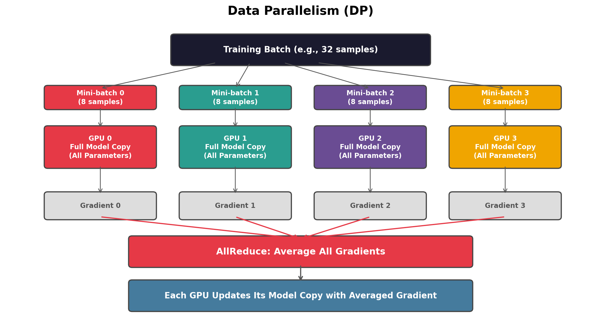
张量并行把单个层的权重矩阵切分到多张 GPU。每张 GPU 只持有权重的一部分， 计算也只做对应的部分，然后通过通信拼合结果。
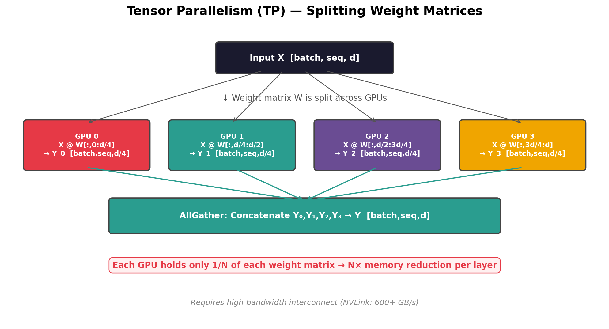
Megatron-LM（Shoeybi et al., 2019）提出了经典的 TP 方案，针对 Transformer 的两个子层：
第一个线性层 W1 按列切分（Column Parallel），
每 GPU 计算输出的一部分维度。第二个线性层 W2 按行切分（Row Parallel），
各 GPU 的部分结果直接相加得到最终输出。
通信：前向 1 次 AllReduce，反向 1 次 AllReduce。
Q/K/V 投影矩阵按注意力头切分——每 GPU 负责 h/N 个头的完整计算。
输出投影 WO 按行切分。
通信：前向 1 次 AllReduce，反向 1 次 AllReduce。
Megatron-LM v2 引入了序列并行：在非张量并行的操作（如 LayerNorm、Dropout）上， 沿序列长度维度切分。这减少了激活值的冗余存储—— TP 中每张 GPU 的 LayerNorm 输入/输出本来是完整的 [seq, d]， SP 将其切为 [seq/N, d]，内存进一步降低。
流水线并行把模型按层分组，不同组放在不同 GPU 上。 数据像流水线一样依次通过各级 GPU。
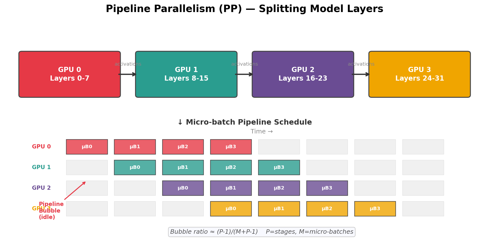
PP 的核心问题是气泡——在流水线启动和排空阶段，部分 GPU 处于空闲状态。
例如 P=4, M=4 时气泡比例 = 3/7 ≈ 43%，近一半时间被浪费！ 解决方案是增大 M（更多 micro-batch），使 M >> P，气泡比例趋近于 0。
| 策略 | 气泡率 | 内存 | 特点 |
|---|---|---|---|
| GPipe | (P-1)/M | 高（存所有 micro-batch 的激活） | 简单，同步调度 |
| 1F1B | (P-1)/M | 低（只存 P 个 micro-batch 的激活） | 交错前向和反向 |
| Interleaved 1F1B | (P-1)/(M×v) | 中 | 每 GPU 持有多个不连续的层组，v 为虚拟级数 |
| Zero Bubble PP | ≈0 | 高 | 将反向传播拆为 B 和 W 两步，用 W 步填充气泡 |
所有并行策略的底层都依赖于一组集合通信操作。理解这些原语是理解并行策略的基础。
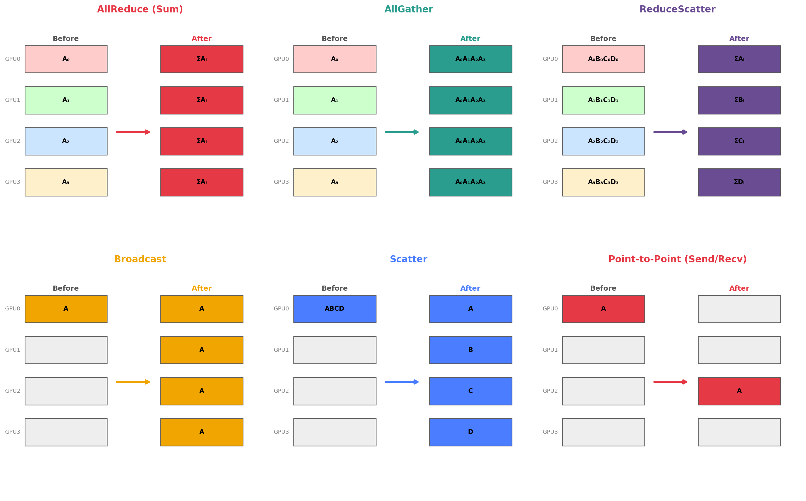
| 操作 | 功能 | 通信量（每 GPU） | 使用场景 |
|---|---|---|---|
| AllReduce | 所有 GPU 的数据求和/平均，结果发回所有 GPU | 2×|data|×(N-1)/N | DP 梯度同步、TP 层间同步 |
| AllGather | 每 GPU 有一块，收集后所有 GPU 各得完整数据 | |data|×(N-1)/N | FSDP 参数聚合、TP 输出拼合 |
| ReduceScatter | 先对所有 GPU 数据求和，再均分到各 GPU | |data|×(N-1)/N | FSDP 梯度分片 |
| Broadcast | 一个 GPU 的数据复制到所有 GPU | |data| | 参数初始化、权重同步 |
| Scatter | 一个 GPU 的数据均分到所有 GPU | |data|/N | 数据分发 |
| All-to-All | 每个 GPU 向其他所有 GPU 发送不同的数据块 | |data|×(N-1)/N | MoE 专家并行 token 路由 |
| Send/Recv (P2P) | 两个 GPU 之间点对点传输 | |data| | PP 层间激活传递 |
最常用的 AllReduce 实现是 Ring AllReduce：N 张 GPU 排成一个环， 数据被分成 N 块，经过 2×(N-1) 步传输完成。每步只传 |data|/N 的数据量， 总通信量为 2×|data|×(N-1)/N——与 GPU 数量 N 无关。
All-to-All（也称 Personalized All-to-All 或 Transpose 操作）是所有集合通信中 最"个性化"的一个：每个 GPU 向其他每个 GPU 发送不同的数据块。 与 AllReduce（所有 GPU 发送相同数据）和 AllGather（每 GPU 发送一块、所有 GPU 收完整）不同， All-to-All 的每一对 GPU 之间传输的数据内容都是独立的。
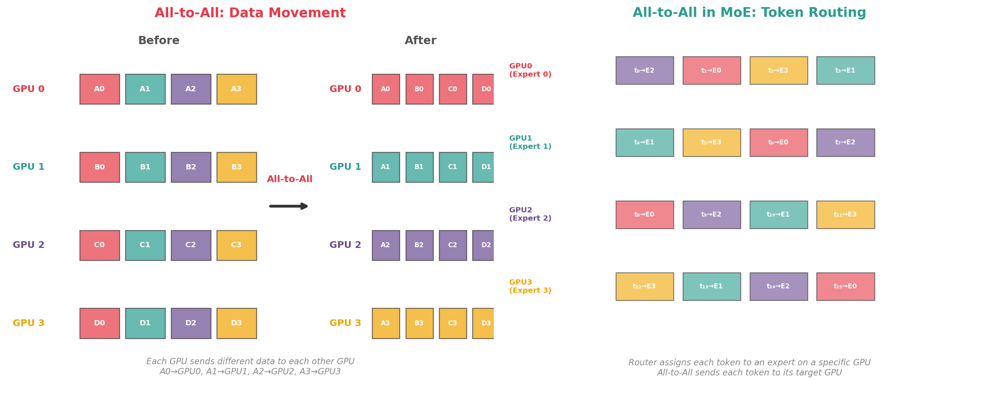
假设有 4 个 GPU，每个 GPU 持有一个数据张量，被均分为 4 个块：
| 块 0（给 GPU0） | 块 1（给 GPU1） | 块 2（给 GPU2） | 块 3（给 GPU3） | |
|---|---|---|---|---|
| GPU 0 持有 | A0 | A1 | A2 | A3 |
| GPU 1 持有 | B0 | B1 | B2 | B3 |
| GPU 2 持有 | C0 | C1 | C2 | C3 |
| GPU 3 持有 | D0 | D1 | D2 | D3 |
All-to-All 之后：
| 来自 GPU0 | 来自 GPU1 | 来自 GPU2 | 来自 GPU3 | |
|---|---|---|---|---|
| GPU 0 收到 | A0 | B0 | C0 | D0 |
| GPU 1 收到 | A1 | B1 | C1 | D1 |
| GPU 2 收到 | A2 | B2 | C2 | D2 |
| GPU 3 收到 | A3 | B3 | C3 | D3 |
在 MoE（Mixture of Experts）层中，All-to-All 被调用两次：
| 特性 | AllReduce | AllGather | All-to-All |
|---|---|---|---|
| 每 GPU 发送内容 | 所有 GPU 发相同数据 | 所有 GPU 发相同块 | 每个目标 GPU 发不同数据 |
| 每 GPU 接收内容 | 相同的聚合结果 | 所有块的拼合 | 来自所有 GPU 的不同块 |
| 是否涉及计算 | 是（求和/平均） | 否 | 否 |
| 通信量/GPU | 2|data|(N-1)/N | |data|(N-1)/N | |data|(N-1)/N |
| 通信模式 | 规则（Ring 友好） | 规则（Ring 友好） | 不规则（全连接） |
| 典型实现 | Ring / Tree | Ring | 直接 P2P / 分层 |
| 主要应用 | DP 梯度同步 | FSDP 参数聚合 | MoE 专家并行 |
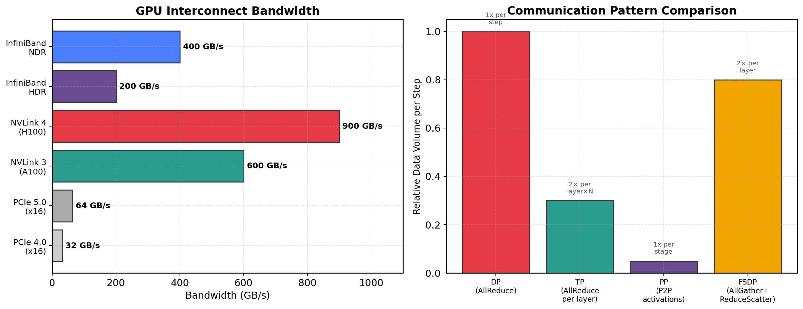
标准 DP 中，每张 GPU 存储完整的：参数 + 梯度 + 优化器状态。 对于一个 7B 参数的模型（FP16），每张 GPU 的内存占用为：
ZeRO（Zero Redundancy Optimizer, Rajbhandari et al., 2020）的核心思想： 不同 GPU 各存 1/N 份，需要时再通信聚合。分三个渐进阶段：
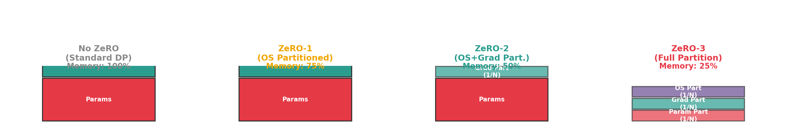
| 阶段 | 分片内容 | 内存节省 | 额外通信 | 等价名称 |
|---|---|---|---|---|
| ZeRO-1 | 优化器状态 | ~4x | 无额外通信 | — |
| ZeRO-2 | 优化器状态 + 梯度 | ~8x | ReduceScatter 替代 AllReduce | — |
| ZeRO-3 | 优化器 + 梯度 + 参数 | ~N× | 前向/反向时 AllGather 参数 | FSDP |
FSDP 是 PyTorch 对 ZeRO-3 的原生实现。其训练步骤：
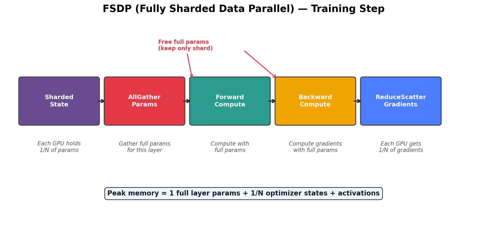
单一并行策略都有局限：DP 无法处理超大模型，TP 受限于节点内带宽，PP 有气泡开销。 实际训练将三者组合，各取所长：
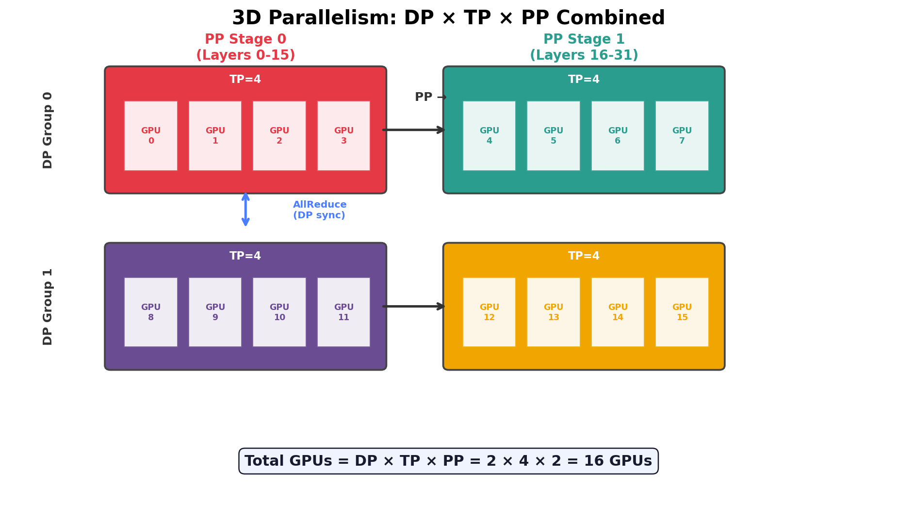
| 模型 | 总 GPU | DP | TP | PP | 总计 |
|---|---|---|---|---|---|
| LLaMA-7B | 128 | 128 | 1 | 1 | 纯 DP（模型够小） |
| LLaMA-13B | 256 | 64 | 2 | 2 | DP=64, TP=2, PP=2 |
| LLaMA-65B | 2048 | 64 | 8 | 4 | DP=64, TP=8, PP=4 |
| GPT-4 级别 | ~25000 | ~400 | 8 | ~8 | 大规模 3D |
Mixture-of-Experts（MoE）模型（如 Mixtral 8x7B、DeepSeek-V3）将 FFN 层替换为多个"专家"， 每个 token 只激活其中 k 个。专家并行将不同专家放在不同 GPU 上：
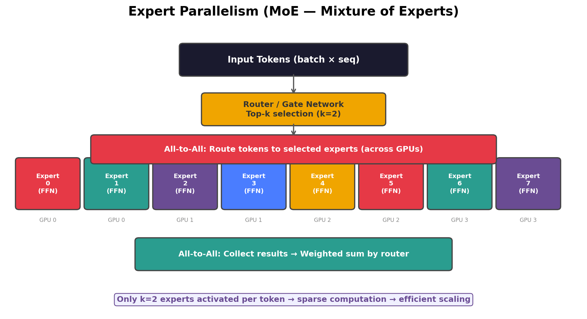
专家并行的核心通信原语是 All-to-All：每张 GPU 向其他所有 GPU 发送不同的数据。 这与 AllReduce（所有 GPU 发送相同数据）不同——All-to-All 的通信模式更不规则， 对网络拓扑的要求更高。
当上下文窗口从 4K 扩展到 128K 甚至 1M 时，注意力计算的 O(N2) 内存需求成为训练的主要瓶颈——即使用了 FlashAttention 将峰值内存降为 O(N)， KV Cache 和激活值仍然随序列长度线性增长。128K 序列的激活值可能占满整张 A100 的显存， 即使模型参数本身并不大。
上下文并行将单条序列沿序列长度维度切分到多张 GPU 上。 每张 GPU 只持有序列的一个片段（chunk），计算该片段的注意力时， 通过通信获取其他片段的 KV 信息。
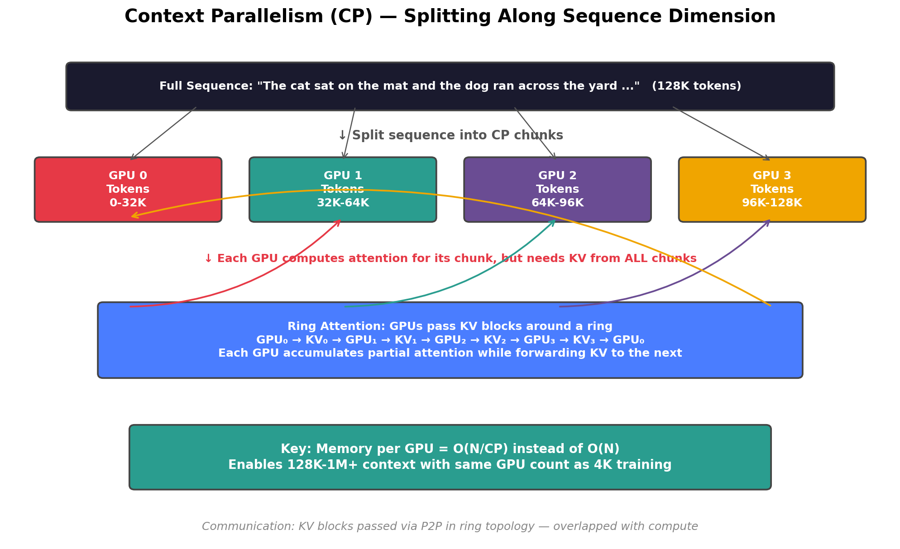
Ring Attention（Liu et al., 2023）是实现 CP 的核心算法。其工作方式：
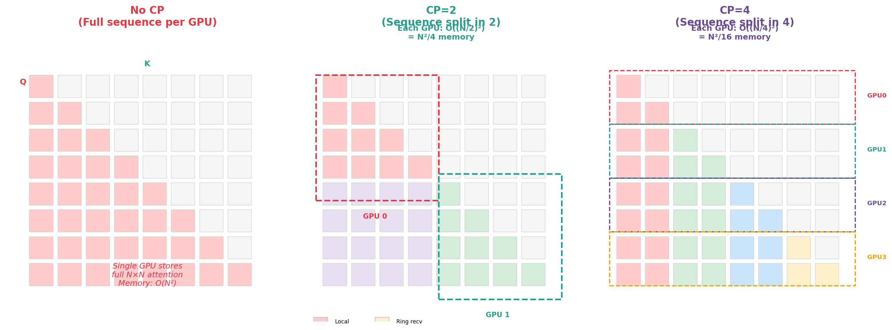
| 资源 | 无 CP | CP = 2 | CP = 4 | CP = 8 |
|---|---|---|---|---|
| 每 GPU Q/K/V 激活值 | O(N × d) | O(N/2 × d) | O(N/4 × d) | O(N/8 × d) |
| 注意力工作内存 | O(N) | O(N/2) | O(N/4) | O(N/8) |
| KV Cache（推理） | O(N) | O(N/2) | O(N/4) | O(N/8) |
| 通信轮次 | 0 | 1 | 3 | 7 |
| 每轮传输量 | — | 2 × N/2 × d | 2 × N/4 × d | 2 × N/8 × d |
基础版本。KV 块沿环形拓扑逐步传递，与 FlashAttention 的分块计算天然兼容。 适用于因果注意力和双向注意力。
不按连续段切分序列，而是交错分配 token（如 GPU0 取偶数位，GPU1 取奇数位）。 更均匀的负载分布，避免因果掩码导致的计算不均衡（前面的 chunk 工作量远少于后面的）。
DeepSpeed-Ulysses 方案。将 Q 沿序列维切分，K/V 通过 AllGather 聚合完整版本， 然后每 GPU 对自己的 Q 块做完整 Attention。通信模式更简单，但 KV 聚合占用更多内存。
在节点内使用 TP（切权重），跨节点使用 CP（切序列），实现 4D 并行。 LLaMA-3.1 的 128K 训练采用此方案：TP=8（节点内）+ CP=4-8（跨节点）。
因果注意力中，序列前部的 token 只关注少数前文，后部的 token 需要关注全部前文。 如果按连续段切分，最后一个 chunk 的计算量远大于第一个，导致负载不均衡。
| 方案 | 切分维度 | 通信模式 | 内存节省 | 适用互连 | 代表实现 |
|---|---|---|---|---|---|
| Sequence Parallel (SP) | 非 Attention 操作的序列维（LayerNorm, Dropout） | AllGather / ReduceScatter | 仅激活值（小） | NVLink | Megatron-LM v2 |
| Context Parallel (CP) | Attention 的序列维（Q/K/V 全切分） | Ring P2P / AllGather | 激活值 + KV Cache（大） | NVLink / IB | Ring Attention, Megatron-CP |
| Ulysses SP | Q 沿序列维，K/V AllGather | AllGather + ReduceScatter | 激活值（中） | NVLink | DeepSpeed-Ulysses |
推理和训练的并行需求不同——推理没有反向传播，优化目标是低延迟或高吞吐。
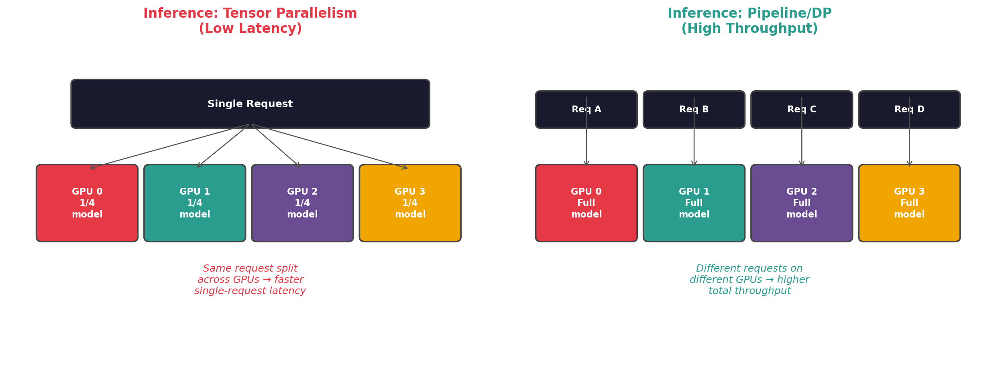
将模型切分到多 GPU，单个请求并行计算。首 token 延迟（TTFT）和每 token 延迟都降低。 适合交互式场景（聊天、实时对话）。代价是需要 NVLink 互连。
每 GPU 加载完整模型，不同请求发往不同 GPU。无 GPU 间通信。 适合批量处理场景（离线翻译、批量总结）。要求每卡能放下完整模型。
适用于模型太大无法单卡放下，但不需要极低延迟的场景。 多个请求可以像流水线一样在不同层级间流动。延迟较高但吞吐可接受。
Prefill 阶段（计算密集）和 Decode 阶段（内存密集）分配到不同的 GPU 集群。 各自针对性优化硬件配置。代表：Splitwise, DistServe。
| 框架 | 并行支持 | 核心优化 | 适用规模 |
|---|---|---|---|
| vLLM | TP + PP | PagedAttention, Continuous Batching | 单节点到多节点 |
| TensorRT-LLM | TP + PP + MoE EP | NVIDIA 硬件深度优化, FP8 | NVIDIA GPU 集群 |
| SGLang | TP + DP | RadixAttention, 前缀缓存 | 单节点为主 |
| DeepSpeed-Inference | TP + PP | 与 ZeRO 集成, 异构推理 | 大规模集群 |
| 并行方式 | 切分维度 | 通信原语 | 通信频率 | 适用互连 | 内存节省 |
|---|---|---|---|---|---|
| DP | 数据 (batch) | AllReduce | 每步 1 次 | 任意 | 无 |
| FSDP/ZeRO-3 | 数据 + 参数分片 | AllGather + ReduceScatter | 每层 2 次 | 任意 | N 倍 |
| TP | 权重矩阵 (列/行) | AllReduce / AllGather | 每层 2 次 | NVLink | N 倍/层 |
| PP | 模型层 | P2P (Send/Recv) | 每 micro-batch | InfiniBand | 按层分摊 |
| SP | 序列长度 | AllGather + ReduceScatter | 每层 | NVLink | 激活值 N 倍 |
| CP | 序列长度 | Ring P2P / AllGather | 每层 CP-1 轮 | NVLink / IB | 激活+KV N倍 |
| EP (MoE) | 专家 | All-to-All | 每 MoE 层 2 次 | NVLink / IB | 按专家分摊 |
大模型的并行训练是一个系统工程，需要在计算、内存和通信之间精心平衡：